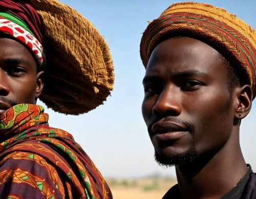

Ghana's Akan people hold deep meaning in their naming traditions. Each child receives a "day name" based on their birthdate, reflecting personality traits and beliefs tied to that day. "Kofi," for instance, is given to Friday babies and signifies perseverance. Family names, unlike Western surnames, connect children to prominent ancestors, fostering a strong sense of lineage. Additional names might be bestowed based on birth order or circumstances, highlighting hope or resilience. Nicknames, often playful, are also common. Akan names are more than just words; they're a link to heritage, instilling a sense of belonging and responsibility within the vibrant Akan community.
Explore names
